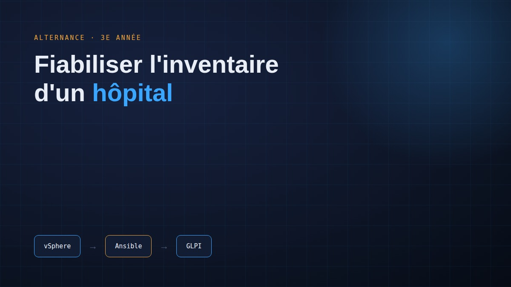
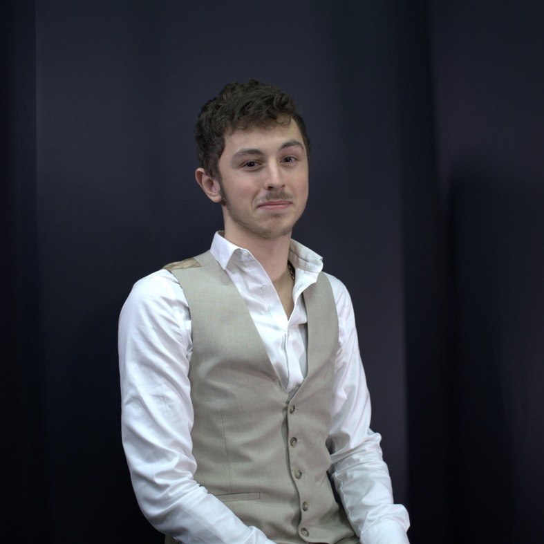
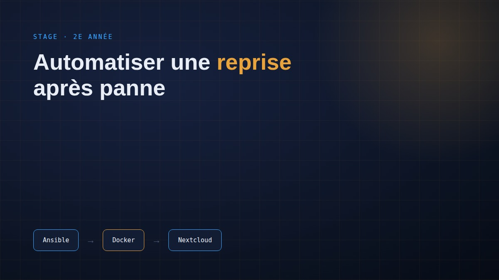
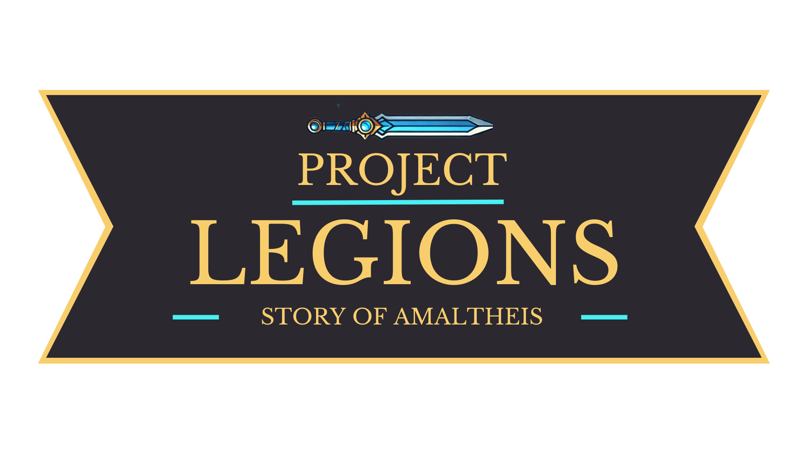
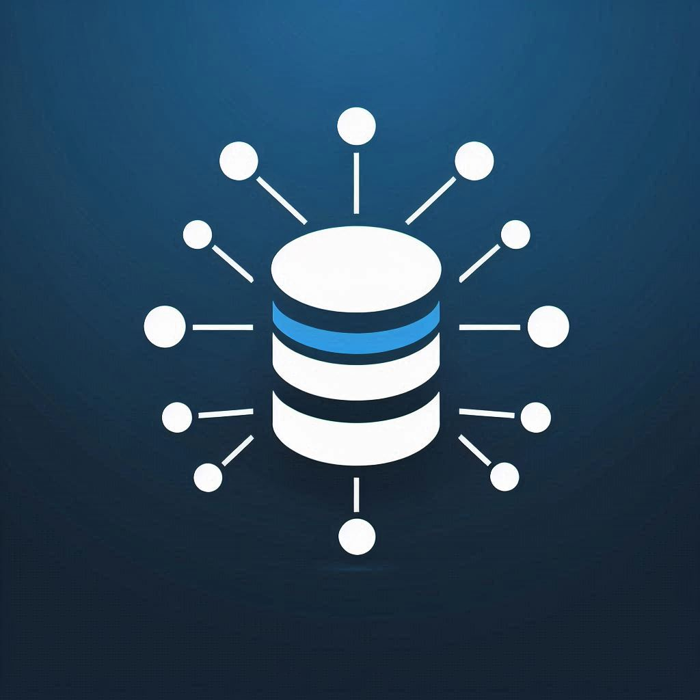
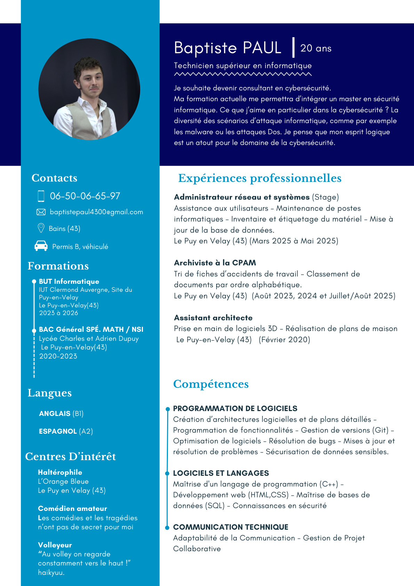

Alternance · 3e année

Fiabiliser l'inventaire d'un hôpital
Synchronisation automatique des machines virtuelles entre vSphere et GLPI, à l'échelle d'un groupement hospitalier.
Voir le projet →Futur consultant en cybersécurité
Passionné par l'informatique depuis plusieurs années, je me projette vers le métier de consultant en cybersécurité — porté par mon esprit logique et ma curiosité pour les scénarios d'attaque informatique.
À propos

Passionné par l'informatique depuis plusieurs années, je me projette vers le métier de consultant en cybersécurité.
Pour atteindre cet objectif, j'ai intégré l'IUT du Puy-en-Velay afin d'y valider le diplôme du BUT Informatique appliqué à l'image. Ma formation actuelle me permettra d'intégrer ensuite un master en sécurité informatique.
Ce que j'aime en particulier dans la cybersécurité ? La diversité des scénarios d'attaque informatique, comme par exemple les malwares ou les attaques DoS. Je pense que mon esprit logique est un vrai atout pour ce domaine.
Curieux et persévérant, j'aime développer à la fois mon esprit logique et mon sens créatif, notamment à travers ma passion pour les casse-têtes et les énigmes — des activités qui m'aident à aborder les problèmes sous différents angles et à trouver des solutions innovantes.
Parcours
2025 — 2026
Centre Hospitalier Émile Roux · Pôle Sécurité · Fiabilisation et sécurisation du système informatique.
Mars — Mai 2025
Centre Hospitalier Émile Roux · Automatisation de procédures de reprise après panne avec Ansible.
2023 — 2025
IUT Clermont Auvergne, Le Puy-en-Velay.
2020 — 2023
Lycée Charles et Adrien Dupuy, Le Puy-en-Velay · Mention Bien.
Projets
Un projet tutoré et trois projets menés en formation ou en entreprise.

Synchronisation automatique des machines virtuelles entre vSphere et GLPI, à l'échelle d'un groupement hospitalier.
Voir le projet →
Déploiement automatisé d'un service Nextcloud critique, restauré en moins de 5 minutes grâce à des rôles Ansible modulaires.
Voir le projet →
Un jeu de combat innovant mêlant mécaniques stratégiques et ambiance futuriste, développé en équipe.
Voir le projet →Un musée virtuel interactif retraçant la vie et les combats de Martin Luther King, conçu en équipe.
Voir le projet →
Conception d'une base de données sécurisée pour la gestion d'inventaire d'une PME, en méthode agile SCRUM.
Voir le projet →Compétences
Déploiement et automatisation de services avec Ansible, conteneurisation Docker.
Segmentation réseau, sécurisation des accès (bastion, pare-feu), bonnes pratiques du moindre privilège.
Scripts Python, intégration d'API REST, gestion de versions avec Git.
Modélisation 3D et développement de jeux vidéo, du prototypage au gameplay.
Structuration de projets techniques de bout en bout, documentation, communication en équipe.
Modélisation, sécurisation et interrogation de bases de données relationnelles.
Curriculum Vitae
Retrouve mon CV complet, consultable en ligne ou téléchargeable au format PDF.

Contact
Une question, une opportunité ? Retrouve-moi ici :